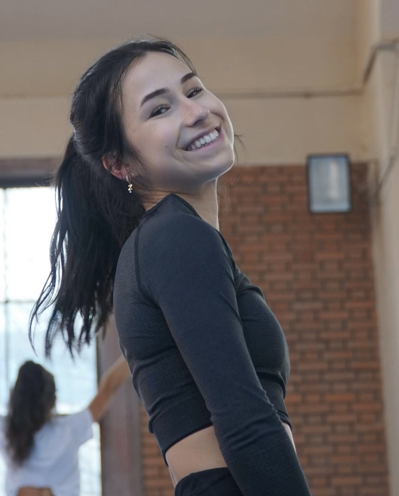

Zoe Flageollet Poccardi

Actuellement en reconversion professionnelle, je débute cette année un école de journalisme, en ayant pour objectif pour ces trois années de récolter un maximum d'expériences chez différents médias, dans différents milieux.
Ancienne sportive de haut niveau, je possède également une expérience conséquente dans le monde du sport, de l'intérieur comme de l'extérieur puisque je suis aussi entraîneur d'une équipe de niveau nationale.
Mon compte linkedin